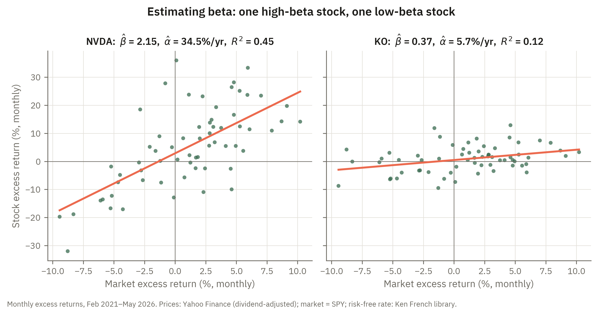

5 The Capital Asset Pricing Model
5.1 Introduction
Two questions lie at the heart of the Capital Asset Pricing Model. First, if all investors optimize in the mean-variance sense and share identical beliefs about expected returns and covariances, what must the market portfolio look like in equilibrium? Second, given that equilibrium, how should the expected return on any individual asset be determined by its contribution to the risk of a well-diversified investor’s portfolio? These questions matter profoundly because they address the most basic practical problem in finance: what return should a rational investor demand as compensation for holding an asset, given the risk it carries? A credible answer to this question is needed to estimate the cost of capital, to assess whether a security is fairly priced, and to evaluate the performance of a portfolio manager.
The first question has a striking answer. Because all investors face the same inputs — identical beliefs about means, variances, and covariances — they all solve the same mean-variance optimization problem and therefore all select the same risky portfolio. In equilibrium, since every investor holds the same risky portfolio and all assets must be held, that portfolio must be the value-weighted portfolio of all traded assets: the market portfolio. This result, which follows directly from the separation property established in the preceding chapter, implies that the Capital Market Line — the capital allocation line through the market portfolio — is the single efficient frontier that every investor faces, regardless of her risk aversion. A more risk-averse investor simply holds more of the risk-free asset and less of the market; she does not change the composition of the risky portion of her portfolio.
The second question yields the CAPM’s central quantitative prediction: the Security Market Line. In equilibrium, the expected excess return on any asset is proportional to its beta, where beta is defined as the covariance of the asset’s return with the market portfolio divided by the variance of the market. Beta is the right measure of risk here because it captures exactly the contribution of an asset to the variance of the market portfolio — the only portfolio that any investor holds. An asset’s standalone variance is irrelevant; what matters is how much it adds to aggregate risk when held as part of the market. High-beta assets amplify market swings, demand a higher risk premium to be held voluntarily, and have higher expected returns in equilibrium. Low-beta and negative-beta assets reduce portfolio risk and can therefore be held at lower expected returns. To see why standalone variance does not matter, the chapter decomposes each asset’s risk into a systematic component tied to its beta and an idiosyncratic component specific to the asset, and shows that the idiosyncratic part can be diversified away at no cost — so only systematic risk is compensated in equilibrium.
The chapter derives both implications rigorously from six clearly stated assumptions: investors are price takers; all plan over a single identical holding period; all assets are publicly traded; there are no transaction costs or taxes; all investors are mean-variance optimizers; and expectations are homogeneous. The derivation shows that equilibrium market clearing, combined with the first-order conditions from mean-variance optimization, forces the market portfolio to be the tangency portfolio and pins down individual asset risk premia through the ratio of covariance with the market to market variance. The quantitative relationship between the market risk premium and average risk aversion also emerges directly from the clearing condition.
The CAPM’s required return is the rate at which investors discount a company’s future cash flows — so when that rate rises, prices fall, and they fall most for firms whose payoffs lie furthest in the future. NBC News reported a sharp sell-off in technology shares on fears of higher interest rates, precisely because high-growth, high-beta stocks are the most sensitive to a rising discount rate. The link between an asset’s risk, its required return, and its price is the heart of this chapter. Read it at NBC News.
5.2 Assumptions
Consider a world where:
- All investors are price takers
- All investors plan for one identical holding period. This behavior may not be optimal for those planning for a longer horizon.
- All investments are publicly traded (this rules out education, labor income, private capital and others).
- There are no transactions costs and no taxes to be paid on returns.
- All investors are mean-variance optimizers.
- Investors agree on the means and variances of all of the securities that they trade. This is called homogeneous expectations.
5.3 Implications
All investors will hold the risky portfolio (although in perhaps different amounts).
The market portfolio will be the tangency portfolio to the CAL. This will be called the Capital Market Line (CML). This line is the optimal CAL for all investors (homogeneous expectations).
The risk premium on the market portfolio will be given by \(Er_M - r_f = \bar A \sigma^2_M\) where \(\sigma^2_M\) is the variance on the market portfolio and \(\bar A\) is the average degree of risk aversion. Notice that \(\sigma^2_M\) is the systematic risk in the environment.
For asset \(i\), let
\[\beta_i = \frac{Cov(r_i,r_M)}{\sigma^2_M}\]
Then it will be true that
\[Er_i - r_f = \beta_i(Er_M - r_f) = \frac{Cov(r_i,r_M)}{\sigma^2_M}(Er_M - r_f)\]
Why is this true?
5.4 Derivation
By assumptions 2,3,5 and 6 each of the investors in this economy will want to hold the same risky portfolio. Call this portfolio the market portfolio \(M\). So the weights given to each asset in the risky portion of every investor's portfolio will be the same. What this means is that this weight will be the same weight that is given throughout the market. To see this, imagine that there are 2 risk assets and that the current value of both assets added together is $1 M. Suppose that there are two investors in the market. Together they own the whole market. Investor 1 and investor 2 have 20% of their wealth in asset 1. Since the total of these two investor's wealths is $1 M and both have exactly 20% in asset 1, it must be that asset 1 comprises 20% of the market value.
Claim 2 follows from Claim 1 together with the separation property. By separation, the single risky portfolio that every investor holds is the tangency portfolio — the portfolio at which a ray from \(r_f\) touches the risky-asset efficient frontier. Since every investor holds this same tangency portfolio and their combined risky holdings sum to the market, the market portfolio is the tangency portfolio. The CAL running from \(r_f\) through it — the Capital Market Line — is therefore the optimal CAL for every investor. (A fully rigorous statement is given in the appendix.)
Claim three follows from the demand of an individual MV optimizer who puts some fraction \(y\) of wealth into the risky asset and the fraction \(1-y\) into the risk free asset. Recall that the demand for this individual is given by
\[y = \frac{Er_M - r_f}{A\sigma^2_M}\]
Index investors by \(i\), so investor \(i\) with wealth \(W_i\) and risk aversion \(A_i\) demands
\[y_i = \frac{Er_M - r_f}{A_i\sigma^2_M}.\]
We now aggregate across investors. In this model any borrowing done by one investor must be offset by lending from another, so the risk-free asset is in zero net supply and total wealth is held in the market portfolio. The dollars each investor places in risky assets, \(W_i y_i\), must therefore sum to aggregate wealth \(W = \sum_i W_i\):
\[\sum_i W_i y_i = W \quad\Longleftrightarrow\quad \sum_i \frac{W_i}{W}\,y_i = 1,\]
so the wealth-weighted average fraction placed in the risky asset is 1. Substituting the demands and pulling the common factor out of the sum,
\[\sum_i \frac{W_i}{W}\cdot\frac{Er_M - r_f}{A_i\sigma^2_M} = \frac{Er_M - r_f}{\sigma^2_M}\sum_i \frac{W_i}{W}\,\frac{1}{A_i} = 1.\]
Solving for the risk premium gives
\[\bar A \sigma^2_M = Er_M - r_f, \qquad \bar A \equiv \left(\sum_i \frac{W_i}{W}\,\frac{1}{A_i}\right)^{-1}.\]
The “average” risk aversion \(\bar A\) that appears is thus the wealth-weighted harmonic mean of the individual coefficients — the same object derived formally in the appendix — because it is the reciprocals \(1/A_i\), not the \(A_i\) themselves, that average linearly across investors.
The most often cited implication of the CAPM model is claim 4. Recall from the previous lecture that the expected reward to risk ratio (the market price of risk) must be the same for all assets and the market portfolio. Thus
\[\frac{Er_i - r_f}{Cov(r_i,r_M)} = \frac{Er_j - r_f}{Cov(r_j,r_M)} = \frac{Er_M - r_f}{Cov(r_M,r_M)} \mbox{ for all } i,j\]
This implies (by rearranging) that
\[Er_i - r_f = \frac{Cov(r_i,r_M)}{\sigma^2_M}(Er_M - r_f)\]
5.5 Systematic and idiosyncratic risk
The CAPM says that only an asset’s beta — its covariance with the market — determines its expected return, and that an asset’s standalone variance is irrelevant. To see why, it helps to split the risk of any asset into two pieces: a part that moves with the market and a part that is specific to the asset itself.
Write the return on asset \(i\) as its projection on the market return plus a residual:
\[r_i = \alpha_i + \beta_i r_M + \epsilon_i,\]
where \(\beta_i = Cov(r_i,r_M)/\sigma^2_M\) as before, and \(\epsilon_i\) is the firm-specific surprise, constructed so that it is uncorrelated with the market: \(Cov(\epsilon_i, r_M) = 0\) and \(E\epsilon_i = 0\). This is simply the regression of the asset’s return on the market’s: \(\beta_i r_M\) is the fitted part and \(\epsilon_i\) is the residual.
Taking the variance of both sides and using \(Cov(\epsilon_i, r_M) = 0\) gives the variance decomposition
\[\sigma^2_i = \underbrace{\beta_i^2 \sigma^2_M}_{\text{systematic}} + \underbrace{\sigma^2_{\epsilon_i}}_{\text{idiosyncratic}}.\]
The first term, \(\beta_i^2\sigma^2_M\), is the systematic (or market) risk of the asset: it comes from the asset’s exposure to economy-wide movements and is governed entirely by beta. The second term, \(\sigma^2_{\epsilon_i}\), is the idiosyncratic (or firm-specific) risk: it reflects events that affect this asset alone — a product recall, a lawsuit, a management shake-up — and is uncorrelated with what happens to the rest of the market.
The decomposition is something you can estimate in one regression, and Figure 5.1 shows it for two familiar stocks over the last five years of monthly data. NVIDIA’s fitted line is steep (\(\hat\beta = 2.15\)): when the market moves a percentage point, NVIDIA moves more than two on average, the signature of a high-beta stock. Coca-Cola’s line is nearly flat (\(\hat\beta = 0.37\)). The vertical scatter of points around each line is the residual \(\epsilon_i\) made visible, and the \(R^2\) of each regression is exactly the systematic share of variance from the decomposition above, \(\beta_i^2\sigma^2_M/\sigma^2_i\) — about 45% for NVIDIA and only 12% for Coca-Cola. Both stocks, in other words, carry most of their risk as idiosyncratic risk, which is precisely the part the next subsection shows a diversified investor can shed for free.

5.5.1 Diversification eliminates idiosyncratic risk
Idiosyncratic risk is special because it can be removed at essentially no cost simply by holding many assets. Consider an equally weighted portfolio of \(n\) assets, \(r_P = \frac{1}{n}\sum_{i=1}^n r_i\). Substituting the decomposition,
\[r_P = \bar\alpha + \left(\frac{1}{n}\sum_{i=1}^n \beta_i\right) r_M + \frac{1}{n}\sum_{i=1}^n \epsilon_i.\]
The systematic part has coefficient equal to the average beta \(\bar\beta = \frac{1}{n}\sum_i\beta_i\), which does not shrink as \(n\) grows. The idiosyncratic part is the average of the residuals. If the firm-specific shocks are uncorrelated across assets, each with variance no larger than some bound \(\bar\sigma^2_\epsilon\), then
\[Var\!\left(\frac{1}{n}\sum_{i=1}^n \epsilon_i\right) = \frac{1}{n^2}\sum_{i=1}^n \sigma^2_{\epsilon_i} \le \frac{\bar\sigma^2_\epsilon}{n} \xrightarrow{\;n\to\infty\;} 0.\]
As the number of assets grows, the portfolio’s idiosyncratic variance vanishes while its systematic variance, \(\bar\beta^2\sigma^2_M\), remains. A well-diversified portfolio therefore carries essentially only systematic risk:
\[\sigma^2_P \;\longrightarrow\; \bar\beta^2\,\sigma^2_M.\]
Market Insight
Because idiosyncratic risk can be diversified away for free, an investor who holds the market portfolio bears none of it. Risk that everyone can costlessly eliminate cannot command a reward in equilibrium: if an asset offered a premium for its firm-specific risk, investors would buy it, diversify that risk away, and bid the premium to zero. Only systematic risk — the part that survives in every diversified portfolio — must be compensated with higher expected return.
This is precisely why the Security Market Line prices assets by beta rather than by total variance \(\sigma^2_i\). Two assets with the same standalone standard deviation can have very different expected returns if one is mostly systematic risk and the other mostly idiosyncratic; the CAPM rewards the first and not the second. The practical lesson is twofold. An investor who holds only a handful of stocks is bearing firm-specific risk that the market does not pay her to hold — she could earn the same expected return at lower risk by diversifying. And when judging how an asset contributes to a portfolio that is already diversified, its standalone volatility is the wrong measure; what matters is its beta, the systematic risk it adds.
5.6 Application: A CFO setting a hurdle rate
When a manufacturing company considers building a new plant, its chief financial officer must decide what return the project has to clear to be worth undertaking — and that hurdle rate is, in practice, the cost of equity the CAPM is designed to produce. The CFO estimates the project’s beta from comparable firms, combines it with the prevailing risk-free rate and an estimate of the market risk premium, and reads off the Security Market Line the return that shareholders require for bearing the project’s systematic risk. That single number flows directly into the discounted-cash-flow valuation that determines whether the plant is approved. The CAPM is therefore not merely a description of equilibrium prices; it is the everyday machinery by which corporate investment decisions, securities valuations, and the evaluation of portfolio managers are carried out.
5.7 Appendix: Formal Derivation of the CAPM
This appendix derives the four claims of the CAPM rigorously from the six assumptions stated above. The arguments proceed in three steps: individual optimization, aggregation via market clearing, and the resulting asset pricing equation.
5.7.1 Setup and notation
There are \(N\) risky assets with random returns \(r_1, \ldots, r_N\). Let \(\mu = (\mu_1,\ldots,\mu_N)'\) denote the vector of expected returns and \(\Sigma\) the \(N\times N\) positive-definite variance-covariance matrix. A risk-free asset with return \(r_f\) is also available. There are \(I\) investors; investor \(i\) has initial wealth \(W_i\) and risk-aversion coefficient \(A_i > 0\). Let \(W = \sum_i W_i\) denote aggregate wealth.
By assumptions 5 and 6 every investor solves the same mean-variance problem, taking \(\mu\), \(\Sigma\), and \(r_f\) as given.
5.7.2 Step 1: Individual optimization and the tangency portfolio
Investor \(i\) chooses portfolio weights \(w \in \mathbb{R}^N\) on the risky assets (the remainder \(1 - \mathbf{1}'w\) is placed in the risk-free asset) to maximize
\[U_i = w'(\mu - r_f\mathbf{1}) + r_f - \frac{A_i}{2}\,w'\Sigma w.\]
The first-order condition is
\[(\mu - r_f\mathbf{1}) - A_i\,\Sigma w_i^* = 0,\]
which gives the optimal risky-asset weights for investor \(i\):
\[w_i^* = \frac{1}{A_i}\,\Sigma^{-1}(\mu - r_f\mathbf{1}).\]
Every investor holds the same vector \(\Sigma^{-1}(\mu - r_f\mathbf{1})\), scaled by \(1/A_i\). The composition of the risky portion of the portfolio is therefore identical across investors; only the overall scale differs. Normalising to unit weight gives the tangency portfolio
\[w_T = \frac{\Sigma^{-1}(\mu - r_f\mathbf{1})}{\mathbf{1}'\Sigma^{-1}(\mu - r_f\mathbf{1})},\]
and we can write \(w_i^* = y_i\,w_T\) where the scalar
\[y_i = \frac{\mathbf{1}'\Sigma^{-1}(\mu - r_f\mathbf{1})}{A_i}\]
is the fraction of wealth investor \(i\) places in the risky tangency portfolio. This confirms Claim 1 and Claim 2: every investor holds the same risky portfolio \(w_T\), and the capital market line passes through \(w_T\).
5.7.4 Step 3: The Security Market Line
Returning to the first-order condition \(\Sigma w_M = \frac{1}{\bar{A}}(\mu - r_f\mathbf{1})\), the \(n\)-th row reads
\[\sum_{j=1}^N \sigma_{nj}\,w_{M,j} = \frac{\mu_n - r_f}{\bar{A}}.\]
The left-hand side is exactly \(Cov(r_n,\,r_M) = Cov\!\left(r_n,\,\sum_j w_{M,j} r_j\right)\), so
\[Cov(r_n, r_M) = \frac{\mu_n - r_f}{\bar{A}}.\]
Applying the same equation to the market portfolio itself (\(n = M\)) gives
\[\sigma^2_M = Cov(r_M, r_M) = \frac{\mu_M - r_f}{\bar{A}}.\]
Dividing the first equation by the second eliminates \(\bar{A}\):
\[\frac{\mu_n - r_f}{\mu_M - r_f} = \frac{Cov(r_n, r_M)}{\sigma^2_M} \equiv \beta_n.\]
Rearranging yields Claim 4, the Security Market Line:
\[\boxed{\mu_n - r_f = \beta_n\,(\mu_M - r_f), \qquad \beta_n = \frac{Cov(r_n,r_M)}{\sigma^2_M}.}\]
Every asset’s expected excess return is proportional to its beta. Assets with \(\beta_n > 1\) amplify market risk and must offer a premium above the market; assets with \(\beta_n < 1\) contribute less than proportionally to aggregate variance and therefore command a smaller premium; assets with \(\beta_n = 0\) are uncorrelated with the market and, in equilibrium, earn only the risk-free rate as their expected return.
5.7.5 Summary
The four claims of the CAPM follow in sequence. Homogeneous expectations and mean-variance optimization (Assumptions 5–6) imply that every investor holds the same tangency portfolio. The public-markets assumption (Assumption 3) and price-taking (Assumption 1) ensure that aggregate demand must equal aggregate supply at every asset, which forces the tangency portfolio to be the market portfolio and pins down the market risk premium as \(\bar{A}\sigma^2_M\). The first-order conditions then deliver the Security Market Line as an immediate algebraic consequence, with beta as the sole determinant of an asset’s required excess return.
Odd Lots (Bloomberg) — “Cliff Asness on How Markets Got Dumber in the Last 10 Years”: a student of Eugene Fama on risk, return, and the factor models that grew out of the CAPM.
5.8 Homework problems
5.8.1 Conceptual
CAPM-C1. Two investors, a cautious retiree and an aggressive young professional, share identical beliefs about the means, variances, and covariances of all traded assets and both are mean-variance optimizers. Explain why, despite their very different attitudes toward risk, the composition of the risky portion of their portfolios must be identical. In your answer, describe how each investor expresses her risk preference and what role the risk-free asset plays.
CAPM-C2. Explain why, in equilibrium, the single risky portfolio that every investor holds must be the market portfolio — the value-weighted portfolio of all traded assets. Use the fact that all assets must be held by someone and that every investor gives the same weights to the risky assets. What would go wrong if the common risky portfolio placed zero weight on some traded asset?
CAPM-C3. Suppose a new class of investors enters the market who, unlike everyone else, believe technology stocks are far riskier than the rest of the market believes. Explain how this violation of homogeneous expectations could cause different investors to hold different risky portfolios, and why the market portfolio would then no longer necessarily be the tangency portfolio for every investor.
CAPM-C4. Assumptions 5 and 6 (mean-variance optimization and homogeneous expectations) are what force every investor to solve the same optimization problem. Explain how each of these two assumptions contributes to the conclusion that the market portfolio equals the tangency portfolio, and describe qualitatively what happens to that conclusion if investors instead disagree about expected returns.
CAPM-C5. Two assets have exactly the same standalone standard deviation \(\sigma_i\), but asset A has \(\beta_A = 1.4\) and asset B has \(\beta_B = 0.3\). Which asset should have the higher expected return in equilibrium, and why? In your answer, explain why the CAPM prices assets by beta rather than by total variance \(\sigma^2_i\).
CAPM-C6. A financial advisor tells a client that a stock with a very high standalone volatility is “too risky to hold” and should command a huge risk premium. Using the definition \(\beta_i = Cov(r_i,r_M)/\sigma^2_M\) and the idea that beta measures an asset’s contribution to the variance of the market portfolio, explain the flaw in this reasoning. What if the stock had a beta of zero despite its high volatility?
CAPM-C7. Explain why, according to the equilibrium condition \(Er_M - r_f = \bar A \sigma^2_M\), the market risk premium would be expected to rise during a period in which investors collectively become more risk-averse (for example, during a financial panic), even if the underlying variance of the market \(\sigma^2_M\) did not change.
CAPM-C8. In the derivation of the market risk premium, the wealth-weighted average of the fraction \(y\) placed in the risky asset is set equal to one. Explain the market-clearing logic behind this step: why must this average equal exactly one, and what does this have to do with borrowing and lending across investors and the risk-free asset being in zero net supply?
CAPM-C9. Using the decomposition \(\sigma^2_i = \beta_i^2 \sigma^2_M + \sigma^2_{\epsilon_i}\), explain in words the difference between the systematic and idiosyncratic components of an asset’s risk. Give a concrete example of a real-world event that would show up in \(\epsilon_i\) but not in the market return \(r_M\).
CAPM-C10. Consider the single-index representation \(r_i = \alpha_i + \beta_i r_M + \epsilon_i\). Explain why \(\epsilon_i\) is constructed to be uncorrelated with \(r_M\), and how that requirement is exactly what allows the variance of \(r_i\) to split cleanly into a systematic term and an idiosyncratic term with no cross term. Which term captures economy-wide movements and which captures firm-specific events?
CAPM-C11. An investor holds a portfolio of only three stocks and complains that it swings wildly. Using the result that the idiosyncratic variance of an equally weighted portfolio behaves like \(\bar\sigma^2_\epsilon / n\), explain why adding many more uncorrelated stocks would reduce her risk at essentially no cost, and explain what portion of the portfolio’s variance would remain no matter how many stocks she added.
CAPM-C12. Explain why the systematic risk of a well-diversified equally weighted portfolio, \(\bar\beta^2\sigma^2_M\), does not shrink as the number of assets \(n\) grows, while its idiosyncratic risk does. Relate this to the statement that “there is no free lunch” for market risk: what is the fundamental difference between the two components that makes one diversifiable and the other not?
CAPM-C13. Explain why, in CAPM equilibrium, an asset earns no premium for bearing idiosyncratic risk. Frame your answer as an arbitrage-style argument: what would investors do if an asset offered a premium for its firm-specific risk, and how would that drive the premium to zero?
CAPM-C14. A stock is found to have \(\beta_i = 0\) even though its standalone standard deviation is large. According to the CAPM, what expected return should it earn, and why does its large idiosyncratic risk earn it nothing? Contrast this with the expectation of a naive investor who prices the stock by its total volatility.
5.8.2 Quantitative
CAPM-Q1. An asset has \(\beta_i = 1.3\). The risk-free rate is \(r_f = 0.02\) and the expected return on the market is \(Er_M = 0.09\). Use the Security Market Line \(Er_i - r_f = \beta_i(Er_M - r_f)\) to compute the asset’s equilibrium expected return \(Er_i\).
CAPM-Q2. The market risk premium is \(Er_M - r_f = 0.06\) and the risk-free rate is \(r_f = 0.03\). Two assets have betas \(\beta_A = 0.5\) and \(\beta_B = 1.6\). Use the Security Market Line to compute the equilibrium expected return of each asset, and find the difference \(Er_B - Er_A\).
CAPM-Q3. An analyst estimates that a stock’s covariance with the market is \(Cov(r_i, r_M) = 0.018\) and the variance of the market is \(\sigma^2_M = 0.036\). Compute the stock’s beta \(\beta_i = Cov(r_i,r_M)/\sigma^2_M\). Then, using the market risk premium \(Er_M - r_f = 0.055\) and \(r_f = 0.025\), find the stock’s expected return \(Er_i\) from the Security Market Line.
CAPM-Q4. A stock has standard deviation \(\sigma_i = 0.30\) and correlation \(\rho_{iM} = 0.4\) with the market, and the market has standard deviation \(\sigma_M = 0.20\). Using \(Cov(r_i,r_M)=\rho_{iM}\sigma_i\sigma_M\) and \(\beta_i = Cov(r_i,r_M)/\sigma^2_M\), compute the stock’s beta.
CAPM-Q5. The average degree of risk aversion in the market is \(\bar A = 2.5\) and the variance of the market portfolio is \(\sigma^2_M = 0.04\). Using \(Er_M - r_f = \bar A \sigma^2_M\), compute the equilibrium market risk premium. If the risk-free rate is \(r_f = 0.03\), what is the expected return on the market portfolio \(Er_M\)?
CAPM-Q6. In equilibrium the market risk premium is observed to be \(Er_M - r_f = 0.06\) and the variance of the market is \(\sigma^2_M = 0.05\). Using the relation \(Er_M - r_f = \bar A \sigma^2_M\), solve for the implied average degree of risk aversion \(\bar A\) in the market.
CAPM-Q7. An investor with risk-aversion coefficient \(A = 3\) faces a market with risk premium \(Er_M - r_f = 0.07\) and variance \(\sigma^2_M = 0.04\). Using the individual demand rule \(y = (Er_M - r_f)/(A\sigma^2_M)\), compute the fraction \(y\) of wealth this investor places in the risky market portfolio. Is she a net borrower or lender at the risk-free rate?
CAPM-Q8. Using the demand rule \(y = (Er_M - r_f)/(A\sigma^2_M)\) with a market risk premium of \(Er_M - r_f = 0.05\) and market variance \(\sigma^2_M = 0.025\), find the risk-aversion coefficient \(A\) of an investor who chooses to hold exactly \(y = 1\) (all wealth in the market and nothing in the risk-free asset). Interpret how this value relates to the average risk aversion \(\bar A\) in equilibrium.
CAPM-Q9. An asset has \(\beta_i = 1.2\), and the market has variance \(\sigma^2_M = 0.05\). The idiosyncratic variance of the asset is \(\sigma^2_{\epsilon_i} = 0.02\). Using the decomposition \(\sigma^2_i = \beta_i^2 \sigma^2_M + \sigma^2_{\epsilon_i}\), compute the asset’s total variance \(\sigma^2_i\) and its total standard deviation \(\sigma_i\). What fraction of the total variance is systematic?
CAPM-Q10. A stock has total variance \(\sigma^2_i = 0.10\) and beta \(\beta_i = 0.8\). The market variance is \(\sigma^2_M = 0.045\). Using the variance decomposition \(\sigma^2_i = \beta_i^2 \sigma^2_M + \sigma^2_{\epsilon_i}\), solve for the stock’s idiosyncratic variance \(\sigma^2_{\epsilon_i}\), and compute the systematic share of total variance.
5.8.3 Data exercises
These problems use the live-data figure in this chapter.
CAPM-D1. In Figure 5.1, NVIDIA’s regression has \(\hat\beta = 2.15\) and \(R^2 = 0.45\); the market’s monthly standard deviation over the sample was about \(4.4\%\). (a) Using the variance decomposition, compute NVIDIA’s systematic monthly variance \(\hat\beta^2\sigma^2_M\). (b) Using \(R^2 = \beta^2\sigma^2_M / \sigma^2_i\), compute NVIDIA’s total monthly standard deviation and its idiosyncratic monthly standard deviation. (c) What fraction of NVIDIA’s risk would a diversified investor actually be compensated for bearing?
CAPM-D2. Take \(r_f = 4\%\) and an expected market premium of \(6\%\) per year. (a) Using the SML and the betas in Figure 5.1, compute the CAPM-required expected returns for NVIDIA (\(\beta = 2.15\)) and Coca-Cola (\(\beta = 0.37\)). (b) The figure reports NVIDIA’s estimated \(\hat\alpha \approx 34.5\%\) per year over 2021–2026. Give two reasons this is not decisive evidence against the CAPM, drawing on the chapter’s discussion of estimation and the next chapter’s joint-hypothesis problem.